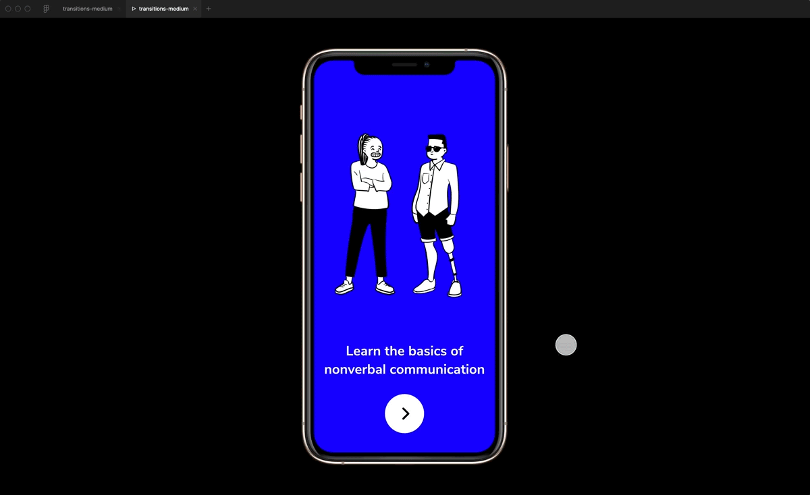
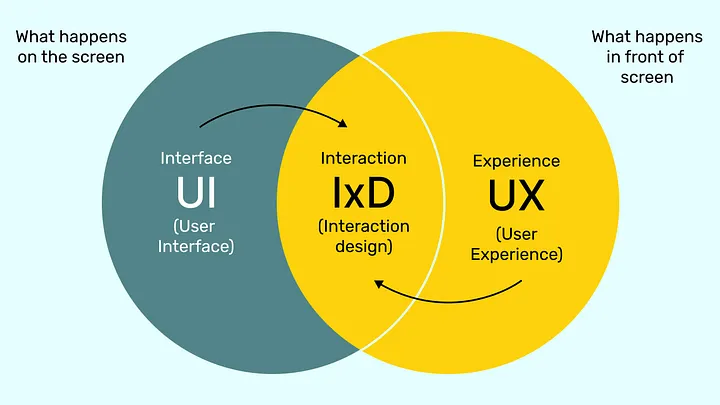
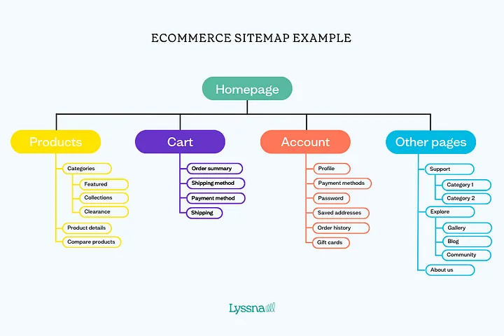
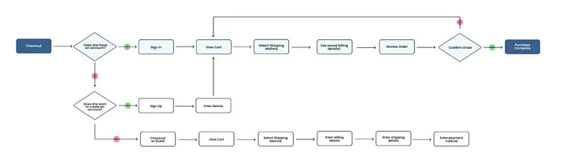
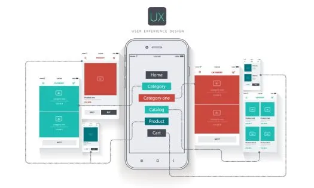
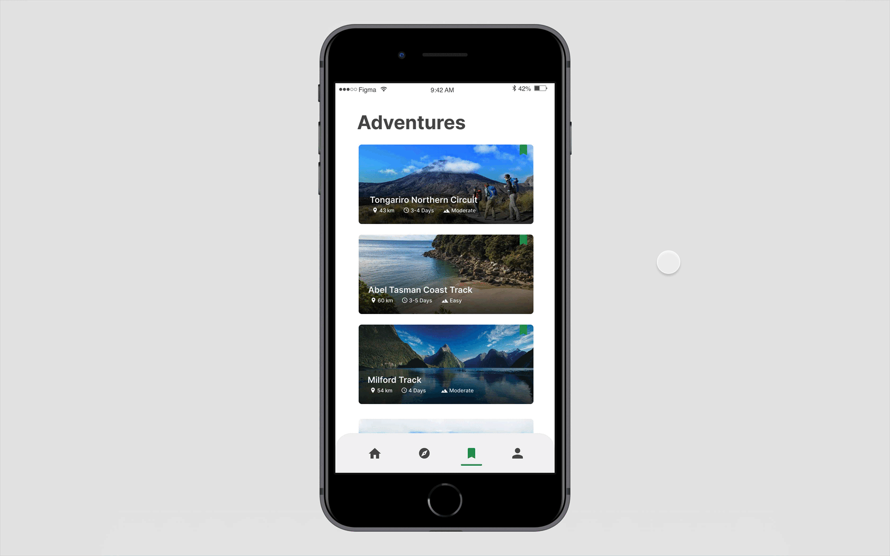
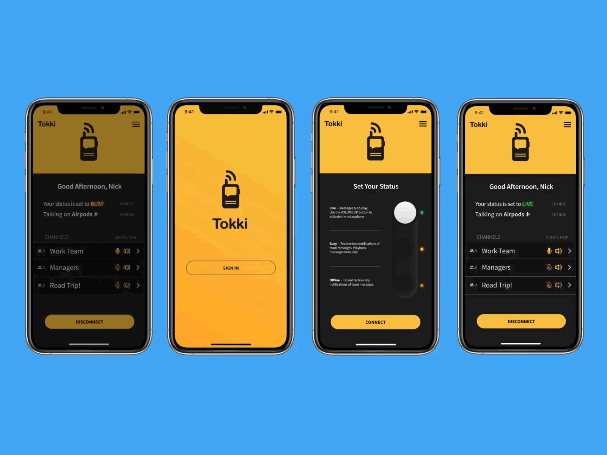

For product managers, translating an idea into a successful product requires crafting a seamless user experience. This is where interaction design (IxD) and prototyping come in — the cornerstones of creating products that users love.Welcome to the exciting world of product management! Here, we blend creativity with understanding what users want to make amazing digital products. In this guide, we’ll cover two important skills: interaction design and prototyping. Whether you’re new to product management or a seasoned pro, these skills are key. We’ll start by explaining the basics and then dive into the tools you’ll need to succeed. Let’s get started on your journey to becoming a top-notch product manager!
Interaction design is like being the architect of a digital space, where every button click, swipe, and tap is carefully crafted to make users’ lives easier. As a product manager, you’re not just building a product; you’re shaping an experience. Understanding how users think and behave is crucial here. By putting yourself in their shoes, you can design interfaces that feel natural and intuitive. This means considering things like where buttons should go, how menus should appear, and how users move through your app or website. Ultimately, mastering interaction design helps you create products that users enjoy using, which is essential for the success of any digital product.

Imagine your product as a conversation. IxD focuses on understanding the user’s side of that conversation. It considers:





Prototyping is like sketching out your product idea before building the real thing. It’s a way to see how everything will work together and get feedback from others before going all in. Prototypes can be simple drawings or more detailed designs that show how the product will look and function. By using prototyping tools, you can make these mockups quickly and easily, allowing you to test ideas and make improvements along the way. It’s a smart way to save time and money while making sure your product is on the right track.

The ideal prototyping tool depends on the stage of your product development and the level of detail you require. Here’s a breakdown of some popular options:
1. Low-fidelity Tools: Perfect for initial ideas and user flow testing.
2. Mid-fidelity Tools: Offer more interactivity and visual detail.
3. High-fidelity Tools: Provide the most realistic experience, often used for user testing and demonstrations.
Let’s imagine you’re developing a mobile app for grocery shopping. Here’s how prototyping can be applied:
1. Low-fidelity Tools: Perfect for initial ideas and user flow testing.
Great product ideas need a user-friendly design to succeed! This guide explores two key skills: Interaction Design (IxD) and Prototyping.IxD is like designing a user journey through your product. Imagine users walking through your app, completing tasks easily. It’s all about making things clear and intuitive.Prototyping lets you build a mock-up of your product, like a sketch or digital model. This helps you test your ideas with real people early on. Get their feedback and make improvements before you invest a lot of time and money.Think of it like trying on a new outfit before you buy it! With prototyping, you can see how your product looks and feels to users, and make sure it fits their needs. These skills will help you build products that people love to use!